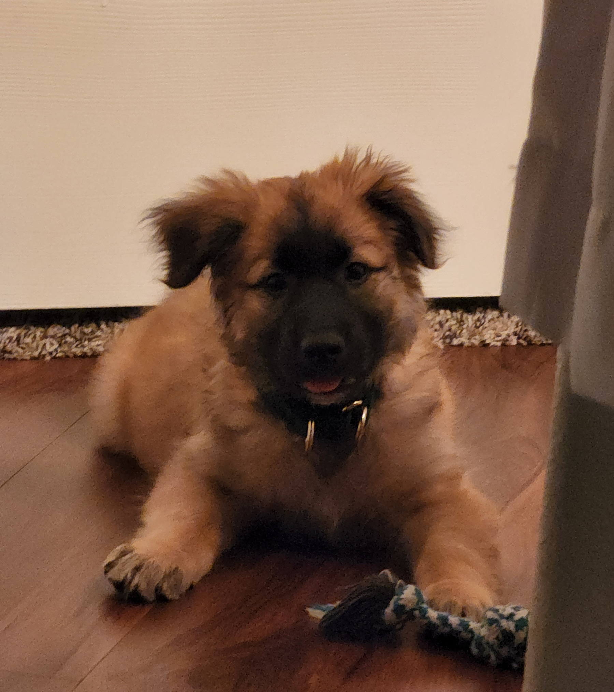
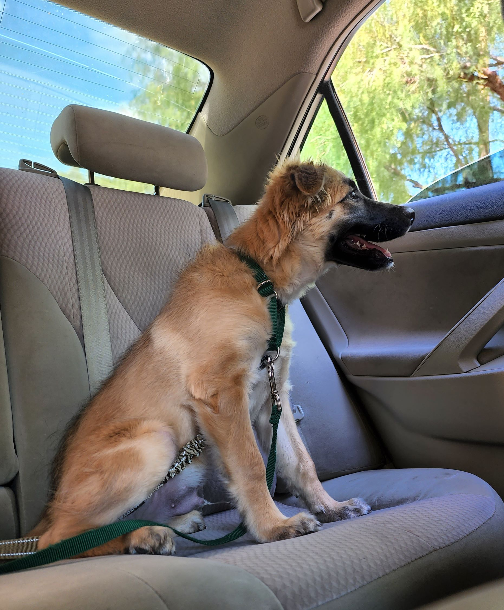

About HY Adoption
 We are Their Voices
Our Mission: To give each dog and cat a change of having a fur-ever home and provide excellent care to them.
Welcome to HY Adoption! We are a dog and cat animal shelter. We are a small local shelter in X city. The founders wanted to help the community as they grew up having animals of their own. They always wished they could do more for other dogs and cats they would see out in the streets. That is how HY Adoption came to fruition.
The reason why the founders created this shelter was due to their dog Frito. Above are some of his pictures. They wanted to create a place where cats and dogs feel protected, loved, and cared.
All pets offered for adoption have been spayed or neutered; micro-chipped and are current on all vaccinations. Any medical treatments needed, including surgeries, are provided by our medical team and all animals are evaluated by our behavior department.